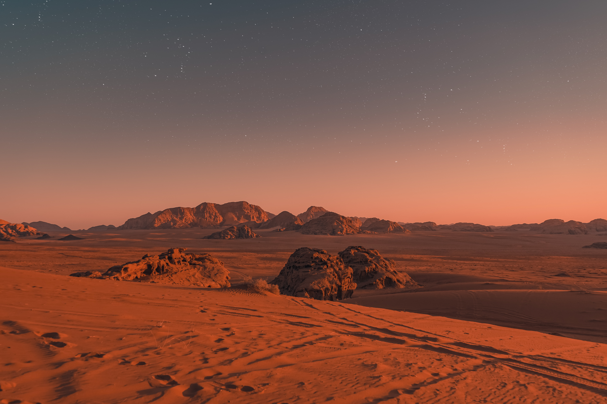
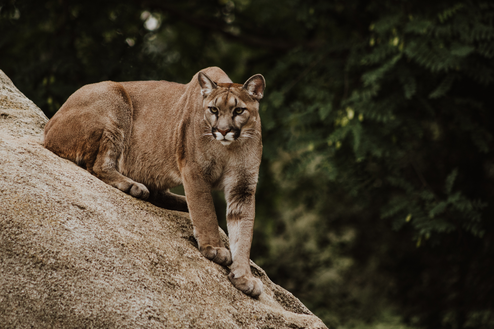

MARS

인류의 새로운 시작, 마스 내셔널지오그래픽 최초의 SF 드라마 시리즈
WILD

생존경쟁! 퓨마VS인간 사냥에 나선 퓨마와 맞닥뜨린 분 스미스의 위험한 여정
VARIOUS CONTENTS
코스모스 || 시공간을 초월한 빅 히스토리,
인류의 존재와 우주의 질
고래의 비밀 바닷속 고래들의 문화,
신비로운 고래의 세계를 공개한다
버뮤다, 삼각지대의 상어 경이로운 뱀상어의 비밀
인도의 와일드 캣 야생 고양잇과 동물의 흥미로운 삶
나일강에 잠겨 있는 피라미드 고대쿠시 왕국의 비밀
위대한 작은 농장:돌아오다 척박한 땅을 마법의 농장으로
변모시킨 농부들